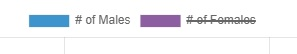
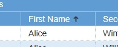
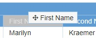
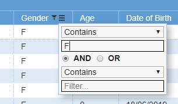
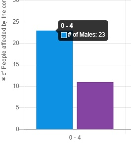
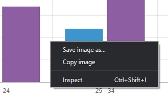
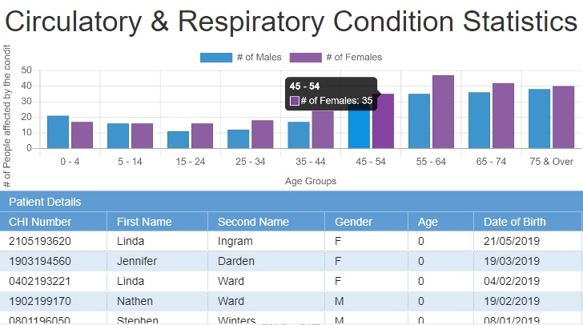

By clicking on the data set you can filter what data to view in the chart. 
 You can sort data by clicking columns in a table.
If you want to see columns in a different order you can drag them. Otherwise you can drag them away to remove them. 
 Hover over the column to reveal a button which allows you to filter the data.
Hover over data to see the number of people affected by a condition based on age and gender. 
 By right clicking the chart you can save it as an image for various uses.
Below mobile device support is shown (Landscape screen orinetation is highly suggested).
